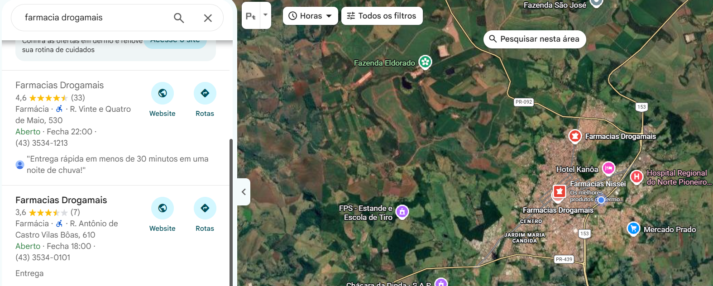

1
Encontre sua farmácia
Entre no Google Maps ↗. No campo de busca, digite o nome da farmácia. Na lista de resultados, escolha a unidade que corresponde ao endereço da sua loja.
Se o nome não aparecer, pesquise o endereço completo, com cidade e estado, e encontre o ponto da loja no mapa.
